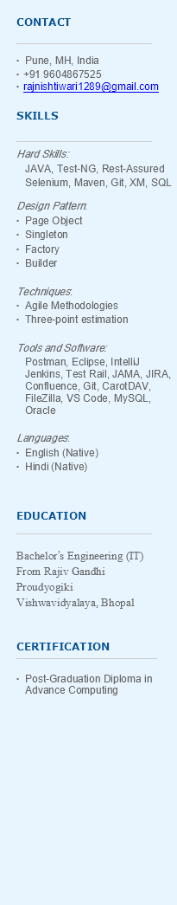

Rajnish Tiwari
10.1 years of Experience in Software Automation Testing
SUMMARY
● Experience in web-based UI, Rest API, and database validation testing using both automation and manual testing with a good understanding of the Test
● Experience leading an automation team of 5 members, and being involved in test planning, test tracking, reporting, and test script review.
● Involved in developing data-driven and hybrid automation framework for Web UI, Rest API, and database validation.
● Good progressive experience in generating the automation test scripts using Java, Rest Assured, Maven, Git, Selenium Web driver, and Test-NG
● Used GitPub as a code repository and Code Collaborator to manage code reviews.
● Performed various functional, smoke, sanity, SIT, UAT, regression, user interface (UI), security, compatibility, and cross-browser testing.
● Involved in the Continuous Integration of the automation framework with Jenkins.
● Experience in raising bugs using the Defect Management Tool like JIRA.
WORK EXPERIENCE
● 1 Year as Project Lead in Persistent System, Pune, India.
● 9.1 years in Cybage Software Pvt Ltd, Pune, India.
- QA Analyst (Nov 2020- Till Date) as Automation Test lead
- Sr. QA Engineer (Apr 2018- Oct 2020) as Senior Automation Engineer.
- QA Engineer (Sep 2014- Mar 2018) as Automation Engineer.
● 6 months of onsite experience in Japan (Coordination with onshore and offshore team members, attending project Kick-off Meetings and new requirements, Build Acceptance testing, Query resolution, Bugs tracking, Test Progress tracking, and Early Test Support)
PROJECTS
Rakuten API Test Automation 10/2017 – 10/2023
● Analyzed business requirements, documented specifications, did Estimation, Test Planning, and Assignment, and Created test scenarios and executed them manually.
● Responsible for verifying requests, and response data validations.
● Created automated test script to test REST API functionality with rest assured.
● Executed and analyzed automation suite over Jenkins and on local env. and did test script and test data maintenance.
Global Ichiba UI Automation 09/2014 – 09/2017
● Requirements Understanding and test scenarios creation, executing them manually, and maintaining test results on the test rail.
● Daily status reports for task progress and share plans for the day.
● Responsible for writing and maintaining Selenium Web Driver scripts for functional testing using a data-driven framework.
● Experience working in multiple environments and in multiple browsers.
.